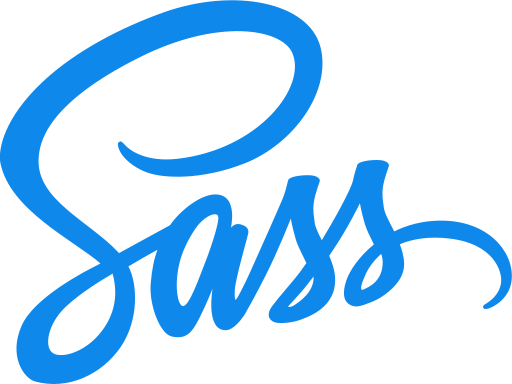

个人简介
个人简介
李锐扬，安徽人，生于1994年初，2015年本科毕业于大连大学软件工程专业并加入去哪儿网担任前端，先后任职于国际机票、车票-班车、火车票等部门。在校期间热衷于写代码，做项目，工作之余喜欢摄影，热爱山地车运动，热爱生活。
专业技能
- Javascript
- Sass 
- React
- Photoshop

PS: 还有ES6和Adobe Illustrator
 项目经历
项目经历
拼车平台&旅游社交[已下线]
类似滴滴拼车功能，可以发布路线、寻找车主乘客，引导用户进行社交分享相关操作并为其他业务引流的一个系统。
国内火车票hybrid化 [部分运营中]
鉴于12306相关接口不稳定及多变性尝试将国内火车票部分视图和业务逻辑以js实现，本人负责掌握整个部门收入的填单页、乘客选择页部分，基于公司内部hybrid视图管理框架QApp.
国际火车票 [运营中]
本人负责浏览器端所有功能以及客户端内hybrid部分，基于React和Yo，包含react组件和基于sass的样式库。浏览器端和客户端内复用相同代码。点击这里查看
 自我评价
自我评价
可能是先天对视觉比较敏感，小时候学美术，大学开始玩ps，做海报什么的，也成为了摄影爱好者。 在校做课程设计，都是全栈，发现前端很有意思，相比Java、C#做界面，Css的魅力大得多；Js则是一个统一前端界同时入侵服务端与桌面端的神奇语言。
我希望写出优雅的Js和Css，也对这二者同时保持着兴趣，虽然我的很多同事不那么重视后者，我会倾向于用Css解决很多很多同事用Js解决的问题。
我是前端。对交互与视觉上的用户体验负责，尤其是我工作过的设计稿基本只管视觉的公司，深感责任重大。我想找一个我觉得产品体验很好的公司，做自己更喜欢的事。觉得有缘分的话，欢迎联系。
电话： 17701342048
邮箱： reyounglee@live.cn